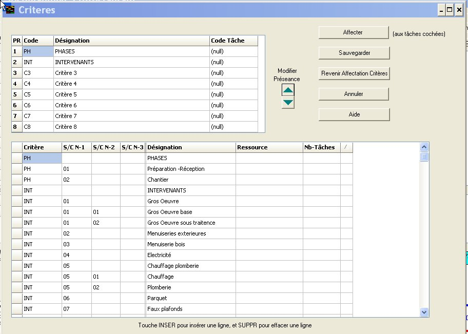

4 Affectation de Critères aux tâches
4.0 Remarques sur les codes critères et leur affectation aux tâches
4.1 Saisi des codes critères et leur affectation aux tâches.
4.2 Onglet d'affectation de critères aux tâches cochées
4.0 Remarques sur les codes critères et leur affectation aux tâches.
Une fois que l'on a ordonné entre-elles les tâches d'une opération on peut établir son planning correspondant.
Avec l'introduction de la notion de codes critères affectés aux tâches, du logiciel Ecoplanning, c'est de nombreuse possibilités de visualisations et de sélections aux quelles l'utilisateur pourra accéder.
De plus le code critère et ses sous critères peuvent représentés l'enveloppe de toutes tous les tâches d'exécution qu'ils contient.
Ceci vous permettra de visualiser pour un même projet le planning résumé aux seules tâches enveloppe du niveau hiérarchique supérieur, a des plannings résumés plus détaillés, au planning des tâches d'exécution.
Nota Une tâche enveloppe a comme date de début la date de début de la première tâche que possède ce code et comme date de fin la date de fin de la plus tardive des tâches ayant ce code. La durée de cette tâche n'est pas fixe elle est dépendante du début et de la fin de l'exécution des tâches extrêmes qui ont ce code.
Ainsi les critères vont permettre d'améliorer la visualisation des tâches du projet, pour les différents utilisateurs concernés à partir de la visualisation sous forme de tableaux de bord.
Ceux-ci vont matérialiser les bases de l'organisation du projet au niveau des plannings, vous allez affecter aux tâches des codes de critères :
A partir de ces codes critères on pourra :
- sélectionner les tâches qui ont un ou plusieurs code critère
- trier les tâches les regrouper par code
- visualiser les tâches sous différentes formes et ceci sous un ou plus niveaux, que l'on peut hiérarchiser
Remarque
Il y a possibilité dans le logiciel Ecoplanning de choisir 8 critères chacun d'eux peut lui-même être décomposé en 3 sous critères : niveau N-1- niveau N-2 niveau N-3, le niveau N-4 peut être le niveau des tâches d'exécution.
Exemple sur trois niveaux successifs : par une différenciation par opérations, à l'intérieur par bâtiments, puis par phases de travaux.
Trois opérations :opération A :opération B :opération C
L'opération A comprend la réalisation de trois bâtiments
bâtiment A1, bâtimen A2, bâtimen A3
le bâtiment A1 comprend la réalisation de trois phases, bâtiment A2 quatre phase, le bâtiment A3 2 phases
d'ou les phases: A1.1 - A1.2 - A1.3 et A2.1- A2.2- A2.3 A2.4 et A31 - A32.
la phase A2-1 comprend la réalisation d'une cinquantaine de tâches d'exécution
Ainsi l'utilisateur pourra visualiser :
au premier niveau 3 tâches
au deuxième niveau ( 3 + 4 +2) 9 tâches
au troisième niveau on aura à visualiser un nombre important de tâches exécution en fonction de la sélection faite
4.1 Saisi des codes critères et leur affectation aux tâches.
Lorsque vous sélectionnez la commande "Critères" du menu "Outils", la boîte de dialogue "Critères tâches" apparaît.
Dans le volet du haut de cette boite vous aurez accès aux 8 codes critères. C1 à C8
Au départ on va affecter a chacun de ces codes critère un nouveau code significatif avec sa désignation correspondante
Dans l'exemple Restauran
- code critère C1 = code PH désignation Phase
- code critère C2 = code INT désignation Intervenant
Dans un deuxième temps on va pouvoir saisir dans le volet du bas les codes et désignation de leurs sous critères.
Si on clique une ou plusieurs fois dans la colonne du niveau N-1 on va créer autant de sous critères à celui-ci.
Le logiciel par défaut va les créer avec le même code critère plus un code sous critère 01 à 99 pour indiquer une préséance, si on crée de nouveau ils viendront se placer à la suite dessous.
Dans l'exemple Restaurant
- les deux sous critères N-1 de PHASE c'est à dire les deux localisations
Préparation réception code PH-01 et Travaux TCE code PH-02
- les 12 sous critères N-1 de INTER c'est à dire les les 12 Lots de Gros Œuvre à Chambre Froide
Gros Œuvre code INT 01 - Menuiseries exterieures code INT 02 - Menuiserie bois code INT 03
- les sous critères N-2 de INTER pour Lots de Gros Œuvre et Chauffage plomberie
Gros Oeuvre base" code INT 0101 - "Gros Oeuvre sous traitence" code INT 0102

La procédure
:
- dans le volet du haut, on clique sur l'un des 8 critères concerné dans la boite du haut et on choisi le code et la désignation du critère.
- pour chacun de ces critères, dans le volet du bas, on crée: les sous critère N-1, les sous critère N-2, les sous critère N-3
- on affecte à ceux-ci une désignation.
On procédera ensuite de la même façon pour saisir les sous critères de niveaux N-2 et N-3.On pourra les modifier en ajouter d'autres. C'est leur code saisi qui fera la préséance entre eux
Attention les utilisateurs devront respecter une codification normale et logique des codes critères pour permettre leur
utilisation comme tâches enveloppes.
4.2 Onglet d'affectation de critères aux tâches cochées
Cliquer sur l'onglet critères à l'écran va apparaître toutes les tâches du projet qui ont déjà été utilisé
C'est à partir de cet onglet que l'on va affecter aux tâches du projet des critères ou sous critère sur 4 niveaux
A l'écran on à 8 critères dans l'ordre de leur saisi dans la boîte de dialogue obtenue à partir de " Critères " du menu " Outils ".
On peut saisir les codes des tâches soit
- une par une en se déplaçant avec la flèche basse dans la colonne de ce critère et saisissant le code correspondant
- un groupe de tâches en même temps lui affecté un code, au préalable par défilement on aura coché les tâches concernées et on pourra avec la commande " accès aux critères " choisir ce code
Lorsqu'on affecte un critère ou sous critère à une aux tâches : son code et désignation apparaît en haut de l'écran ainsi qu'au dessus les codes et désignation des sous critères de niveaux plus élevé.
On connaîtra ansi le nombre des tâches à qui a été affecté ce critère et ses sous critères
Remarque Avant l'affectation d'un critère on peut éliminer par filtrage les tâches non concernées. pour réduire la liste des tâches à visualiser en vue de faciliter ce traitement d'affectation des critères aux tâches.